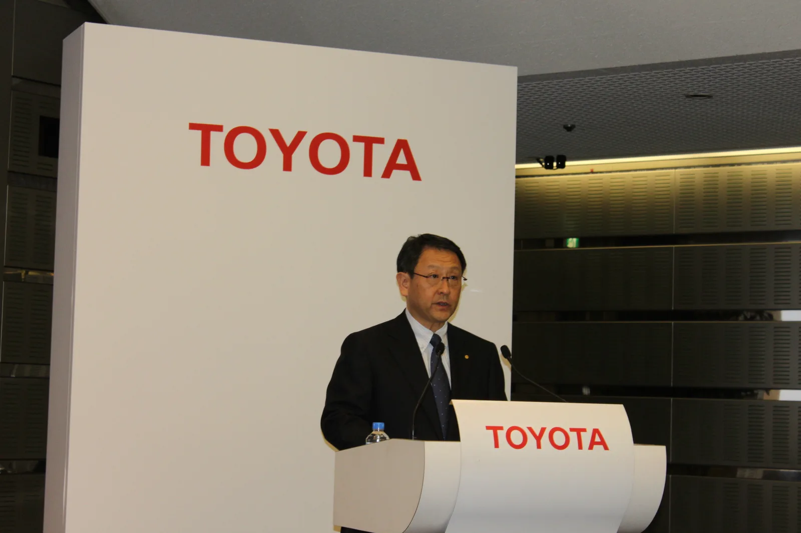
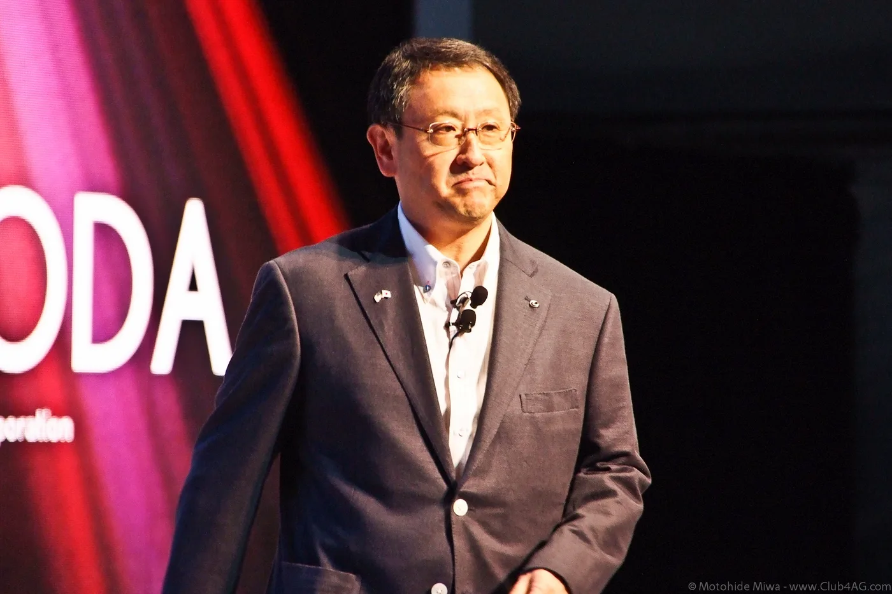
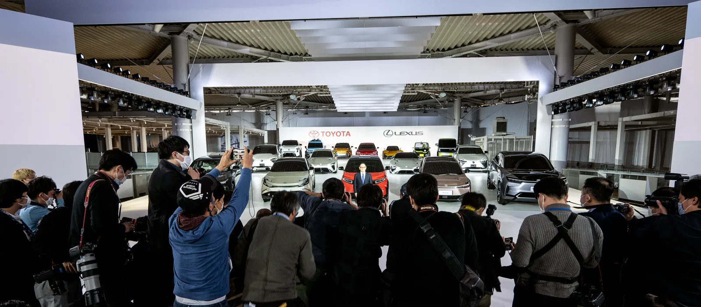
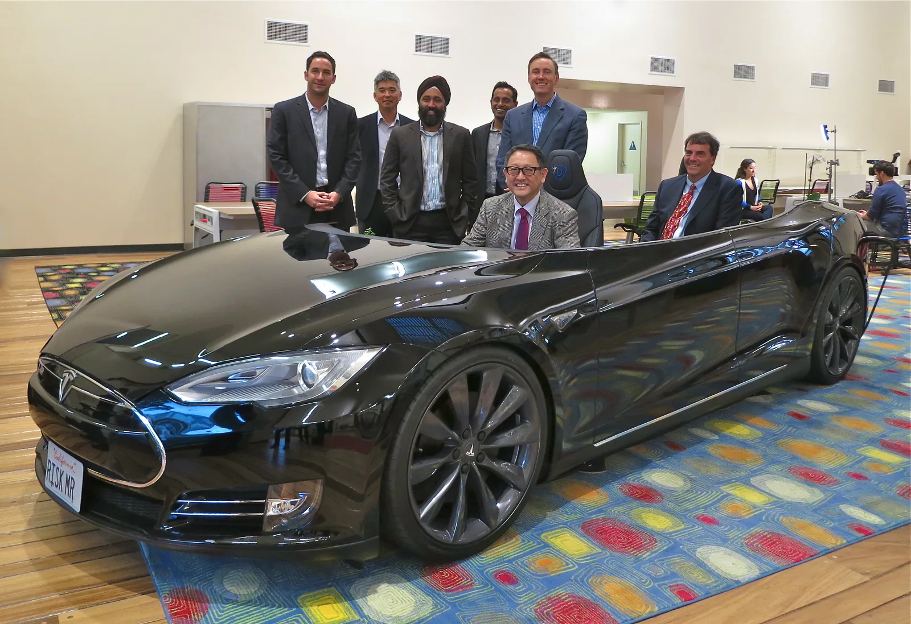
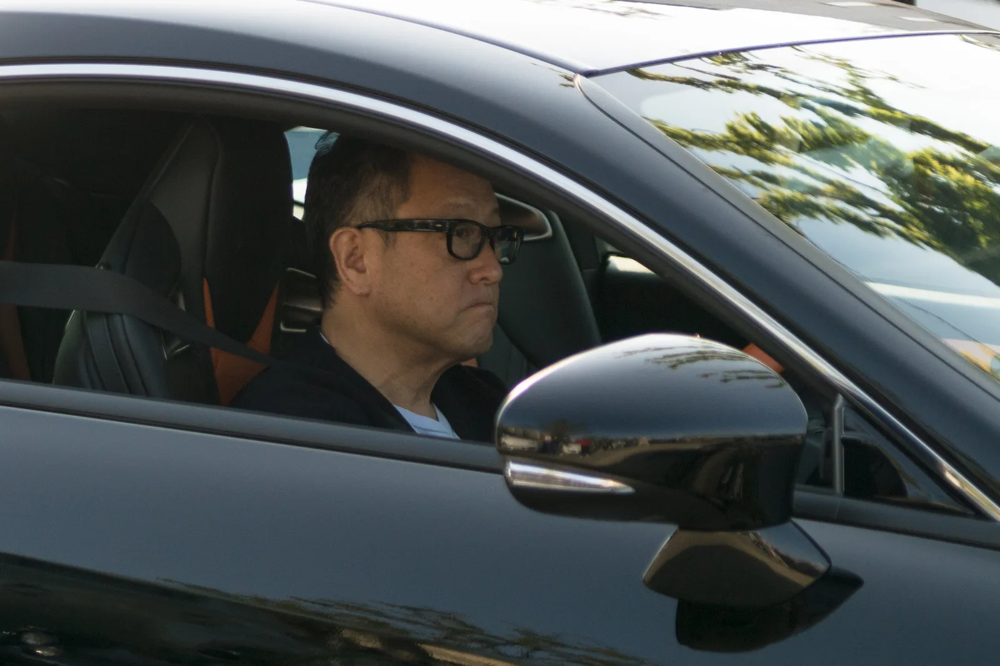
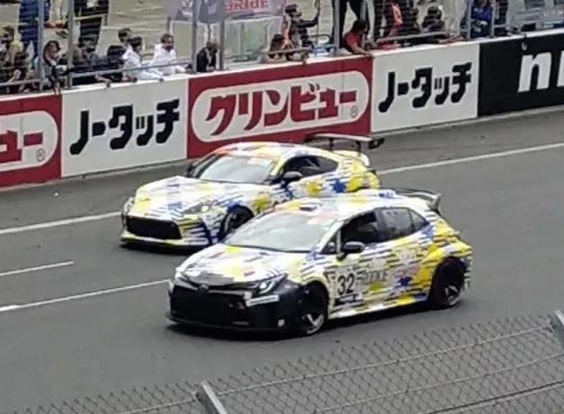

▲ 토요다 아키오 토요타 회장이 2026년 9월 23일(현지시간) 미국 디트로이트 헌액식에서 미국 자동차 명예의 전당에 헌액됐다 ⓒ Bertel Schmitt, CC BY-SA 3.0, Wikimedia Commons
도요타 창업주부터 3대에 걸친 이름이 미국 자동차 명예의 전당에 나란히 올랐다. 토요타는 2026년 9월 23일(현지시간) 미국 디트로이트의 "더 디파트먼트 앳 허드슨스(The Department at Hudson's)"에서 열린 헌액식에서 토요다 아키오 회장의 공식 헌액을 발표했다. 자동차 및 모빌리티 산업 발전에 기여한 혁신가들을 기리는 이 권위 있는 상에, 아키오 회장은 조부와 부친의 뒤를 이어 이름을 올리게 됐다.
1. 무엇이 발표됐나 — 디트로이트 헌액식
토요타는 2026년 9월 23일(현지시간) 미국 디트로이트에서 열린 헌액식에서 토요다 아키오 회장의 미국 자동차 명예의 전당 공식 입성을 발표했다. 자동차 명예의 전당은 글로벌 자동차 및 모빌리티 산업 발전에 기여한 혁신가들을 기리는 권위 있는 상으로, 매년 소수의 인물만이 이름을 올린다.
3대에 걸쳐 한 가문의 이름이 같은 전당에 오른 것은 도요타 역사 자체가 미국 자동차 산업과 오랜 시간 얽혀 있었음을 보여주는 대목이기도 하다.

▲ 토요다 아키오 회장. 2009년 사장으로 취임해 도요타의 품질 위기 극복과 브랜드 신뢰 회복을 이끌었다는 평가를 받는다 ⓒ Motohide Miwa, CC BY 2.0, Wikimedia Commons
2. 3대째 이어지는 헌액 — 도요타 가문의 계보
이번 헌액을 특별하게 만드는 것은 가족 3대가 나란히 같은 전당에 이름을 올렸다는 사실이다. 아키오 회장의 조부인 토요다 기이치로는 도요타 창업주로서 앞서 명예의 전당에 헌액됐다. 아키오 회장의 부친인 토요다 쇼이치로 역시 마찬가지로 헌액자 명단에 이름을 올린 바 있다. 여기에 기이치로의 사촌인 토요다 에이지도 별도로 헌액됐다.
| 관계 | 이름 | 비고 |
|---|---|---|
| 조부 | 토요다 기이치로 | 도요타 창업주 |
| 부친 | 토요다 쇼이치로 | 아키오 회장의 부친 |
| 본인 | 토요다 아키오 | 2026년 9월 23일 헌액(가문 통산 4번째) |
| 기이치로의 사촌 | 토요다 에이지 | 별도 헌액 |
| 토요타 관계자(비혈연) | 오노 다이이치 | 토요타 생산 방식(TPS) 창시자, 별도 헌액 |
한 가문에서 3대에 걸쳐 헌액자가 나온 사례는 명예의 전당 역사에서도 드문 일로 꼽힌다. 창업주 기이치로가 자동차 제조업의 토대를 놓았다면, 쇼이치로는 도요타를 글로벌 기업으로 성장시키는 발판을 마련했고, 아키오 회장은 21세기 들어 브랜드 신뢰 회복과 전동화 전환이라는 새로운 과제를 이끌어온 인물로 평가된다. 아키오 회장은 수락 연설에서 "조부와 부친처럼 나 역시 이 영예에 깊이 감동했으며, 이 업계와 자동차 가족의 일원으로서 매일 그 영예에 걸맞은 사람이 되도록 노력하겠다고 겸허히 약속한다"고 밝혔다.
한편 2026년 자동차 명예의 전당에는 아키오 회장 외에도 이탈리아 레이싱카 제조사 달라라의 창립자 지안파올로 달라라, 경매 전문가 톰 배럿, 오프로드 레이서 러스 잭슨, 내비게이션·지도 기업 톰톰(TomTom) 공동창업자 4인이 함께 이름을 올렸다.
3. 토요다 아키오 회장의 경력과 업적
토요다 아키오는 2009년 토요타 사장으로 취임했다. 취임 시점은 글로벌 금융위기와 대규모 리콜 사태가 겹친, 회사 역사상 가장 어려운 시기 중 하나였다. 아키오 회장은 이 시기 품질 관리를 강화하고 브랜드 신뢰를 회복하며 경영 기반을 재건하는 데 성공적으로 주도적인 역할을 했다는 평가를 받는다.
경영 철학 면에서 그는 "더 좋은 차 만들기(making ever-better cars)"라는 원칙을 정립한 것으로 알려져 있다. 이는 단순한 판매 목표가 아니라, 품질과 운전의 즐거움을 동시에 추구하겠다는 도요타의 방향성을 상징하는 문구로 자리 잡았다. 아키오 회장은 전동화 전환 국면에서도 배터리 전기차(BEV)를 비롯한 다양한 파워트레인 전략을 직접 발표하는 등 경영진 최전선에서 방향을 제시해온 것으로 알려졌다.

▲ 토요다 아키오 회장이 도쿄에서 열린 행사에서 도요타의 배터리 전기차(BEV) 프로토타입과 전동화 전략을 소개하고 있다 ⓒ Bertel Schmitt, CC BY-SA 4.0, Wikimedia Commons

▲ 토요다 아키오 회장이 토요타 3륜 콘셉트카를 직접 운전하는 모습. 그는 신차 개발과 시승 과정에 직접 관여하는 경영 스타일로도 알려져 있다 ⓒ Steve Jurvetson, CC BY 2.0, Wikimedia Commons
4. 모터스포츠와 "마스터 드라이버"
아키오 회장의 또 다른 특징은 모터스포츠에 대한 직접적인 관여다. 그는 "모리조(Morizo)"라는 이름으로 레이스에 직접 참가해온 것으로 잘 알려져 있으며, 사내에서는 "마스터 드라이버"로 통한다. 아키오 회장은 모터스포츠를 단순한 마케팅 수단이 아니라 기업 문화를 구축하는 수단으로 활용해왔다는 평가를 받는다. 개발진과 함께 트랙에서 직접 차량을 시험하고 피드백을 주는 방식은, 도요타 내부에서 "차를 만드는 사람이 직접 몰아봐야 한다"는 원칙으로 자리 잡았다.

▲ 가주 레이싱(GAZOO Racing)의 "모리조(MORIZO)"로 활동하는 토요다 아키오 회장. 레이스 현장에서 얻은 경험을 양산차 개발에 반영하는 것으로 알려져 있다 ⓒ President aruyo, CC BY-SA 4.0, Wikimedia Commons

▲ 2022년 모터스포츠 행사에서 체커기를 든 토요다 아키오 회장. "마스터 드라이버"로서 모터스포츠 현장을 직접 챙기는 것으로 알려져 있다 ⓒ SF-R, CC BY-SA 4.0, Wikimedia Commons
5. 요약
토요다 아키오 토요타 회장이 2026년 9월 23일(현지시간) 미국 디트로이트에서 열린 헌액식에서 미국 자동차 명예의 전당에 공식 헌액됐다. 조부 토요다 기이치로(도요타 창업주), 부친 토요다 쇼이치로에 이어 3대째, 가문 통산 네 번째로 이어지는 헌액이다.
아키오 회장은 2009년 사장 취임 이후 품질 관리 강화와 브랜드 신뢰 회복을 주도했으며, "더 좋은 차 만들기"라는 경영 철학을 정립했다. "마스터 드라이버"로서 모터스포츠를 기업 문화 구축의 수단으로 활용해온 점도 이번 헌액의 배경으로 꼽힌다.